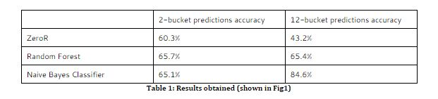
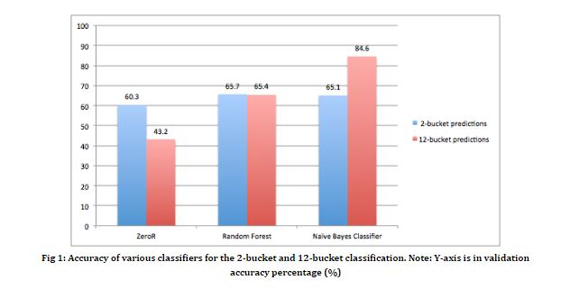
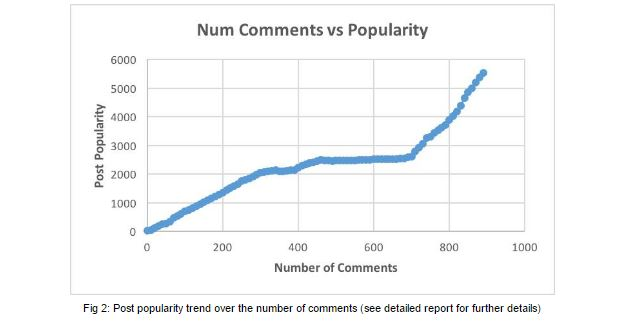
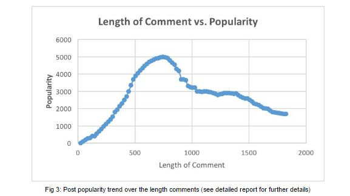

Length (int)
Number of Comments (int)
Created At (timestamp)
Subreddit (string)
Domain (string, usually similar to above)
NSFW Rating (True/False)
Stickied? (True/False)
Web content comes in many different shapes and formats. Some of the most popular websites include videos (YouTube), news feeds (Facebook), and forums (Reddit). Since the success of a social network is often correlated with the quality of the users and content, being able to predict the popularity and quality of posts, photos, and comments would be invaluable as a metric for the success of the social media product, especially in forum based social media, such as Reddit or Imgur. Thus we used posts from Reddit, and corresponding information about each post, to create a model which can discern the popularity of specified Reddit content. The intention of the project is not to predict the specific subjects or topics that incite responses or lead to popular posts, but to identify the important features of the post itself to better classify the current success of such content. This analysis is aimed at optimizing the success of any web content by means of constructing the appropriate social framework for the content, not curating the content itself. The landscapes of the web and the world are rapidly changing, and the hot topics of the future are simply impossible to accurately predict in advance. Hence we hope that the success of this kind of general content optimization will be informative for future ventures into the prediction of popularity in social media.
Our dataset consists of metadata on over 14000 reddit posts sampled by searching unigram and bigrams from the english dictionary through the Reddit API. The metadata obtained consists of a plethora of different features in a json format. Our task was to identify the most important features among them, with respect to their effects on the net popularity score. These features are used as attributes to construct a classification model, including length of the post, number of comments, the subreddit chain, the domain it belongs to (often very similar to the subreddit), NSFW rating, stickied (whether or not the post was set as a sticky, or saved, on the subreddit), and the time that the post was created. These features were selected from among several others provided by the Reddit API since they all consistently provided reliable information for the classifier (Details mentioned in the extended report). Since we were aiming to predict the popularity of the post, we used the score (upvotes minus downvotes) as the output variable; to merit our model to a respectable challenge, we made this attribute nominal and split the scores into the following buckets of net popularity: 0-25, 25-50, 50-75, 75-100, 100-200, 200-300, 300-400, 400-500, 500-600, 600-700, 700-800, 800+. (The reason for this breakdown is discussed later).
We started by testing different classifiers in Weka using 10-fold cross validation and eventually decided on the Naive bayes classifier (see results in Table1 and Fig1). The reason for the selection is the higher accuracy of the Naive bayes classifier over various sizes of datasets for the same features. Also, this classifier yielded generally consistent recall and precision rates (avg difference in percentages is 4.24% for precision-recall) assuring us that the classifier was not assigning the most occurring/modal outcomes for all instances.
We found that we were in fact able to reasonably predict the success of a post given only a few standardized features about the post. Reducing the number of prediction buckets to only two i.e. 0-100, and 100+ (on the measure of net popularity), provided a high validation accuracy in general for most classifiers, with the baseline accuracy of the ZeroR being 65%. This meant that broad classifications of popular vs unpopular were not affected by the social media features and were determined by the content of the post itself, corroborating the fact that the actual content is ultimately the biggest factor and depends on the current trending affairs in the media. We then attempted to capture the intricacies of which among the forums’ features cause the score of one post to be ahead of another, to give evidence of what people tend to first see and upvote and the most attractive content; for example, a user might see that a post has a lot of comments and decide to check what it is about, eventually upvoting it.
In this analysis, we used 12 buckets for the posts to be categorised on, and the results are as illustrated in the graph. Upon implementing random forest, we found the most informative feature to be the number of comments, where a high value would indicate a tendency towards a high score (directly proportional as seen in Fig 2), and vice-versa.
Another very informative feature was the length of the comment; here, the proportionality distribution was not as linear but formed a bimodal normal distribution (See Fig 3). The significance of the features used is discussed in the detailed report.
Our aim, as mentioned in the abstract of our project, is to predict and quantify the effects of the features of a social media framework, in our specific case, that of a forum based website called Reddit.
We gathered a database of 14,800 Reddit posts in JSON format using the Reddit API. Because the API would only return a handful number of posts for each query, we found a way of quickly generating a large dataset by iterating over words in a small dictionary and submitting each word as a query to the API, then logging the results, excluding any unwanted information, to a CSV file.
After testing a number of classifiers in Weka with different settings, we opted to use Naive Bayes due to the all-around superior precision and recall of the algorithm. 10-fold cross validation gave an accuracy of 85%, compared to a baseline ZeroR score of 43% (more than one-sixth of the posts had a score less than 100). Another reason for choosing Naive bayes over other classifiers was that it gave us an 80% f_measure with consistently similar precision and recall rates (avg difference in percentages is 4.24% for precision-recall) assuring us that the classifier was not assigning the most occurring/modal outcomes for all instances. In the Naive Bayes classifier, the accuracies yielded by the bigram searches were generally higher by an average of 1.4% over various Bayesian classifiers, possibly due to the context added by the additional word. Thus we included bigrams in searching and sampling for Reddit posts.
The features that eventually contributed most towards the popularity of the post were:
In order to analyse the results of the classifiers, we grouped the data in 100 sets of 148 instances each and averaged the popularity values for each batch and plotted the figures seen in the abstract. The number of comments vs popularity graph suggests a strong correlation, while the length of comments vs popularity graph suggests a trend consistent with the explanation for that feature given above.
For future improvement in the space of predicting and optimizing content popularity, we’d like to extract more contextual information from the text itself such as sentiment and general themes, in addition to more information about the author of the post (essentially, how likely they are to be a provider of popular content). We believe this will then allow us to curate the content itself to improve popularity rather than other optimize via social media framework features.
The work done on this project was not clearly divided by task or part of the deliverable, but the high-level breakdown would be the following:
If you have any questions about the project, don’t hesitate to shoot us an email at theredditproject at u dot northwestern dot edu